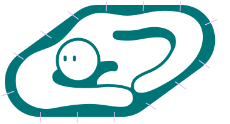
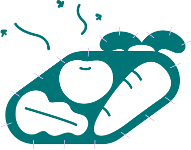

실제 20대 1인가구의 50% 이상이 원룸 및 오피스텔에 거주하고,
20-30대의 대부분이 15평 미만의 공간에서 지내고 있어요.
(오픈서베이, 2023)
화분을 둘 곳이 마땅하지 않아서, 혹은 햇빛이 잘 들지 않아서,
가드닝을 시작하기가 쉽지 않습니다.
도심 속 좁은 주거 공간으로 자연과 정원에 대한
관심과 더불어 독립된 개인적 외부공간의 필요성이 높아지고 있어요.

도심 속 나의 작은 텃밭 조각
가드닝과 휴식을 즐길 수 있는
나만의 쉼터를 가지고 싶어요!
나만의 쉼터를 가지고 싶어요!

식재료가 너무 많이 남아요!

과일이나 야채를 소비 기한 내에 처리하기 어려워 구매를 망설였던 적이 있나요?
혼자 사는 많은 사람들이 남는 식재료를 보관하기 번거로워 신선 식품 섭취에 부담을 느낍니다. 1인가구를 위한 소량 판매 플랫폼도 등장하고 있는 추세랍니다.
혼자 사는 많은 사람들이 남는 식재료를 보관하기 번거로워 신선 식품 섭취에 부담을 느낍니다. 1인가구를 위한 소량 판매 플랫폼도 등장하고 있는 추세랍니다.
커뮤니티
가든
가든
공간 구독
서비스
서비스
마켓
첫번째 팜,
서울시 마포구 성산2동
서울시 마포구 성산2동
마포구청과 월드컵경기장이 위치한 성산2동은 가까이에 대학교와 회사가 밀집해있어 청년 1인가구 비율이 높고, 월드컵경기장을 둘러싼 넓은 공원 탓에 유휴 공간 또한 많은 동네입니다.
바쁘게 살아가는 청년들과 함께 도심 속 편안한 자연을 발견해낼 수 있는 이 곳에 첫번째 팜을 조성하게 되었습니다.
지속 가능한 생활
어피스오브팜은 현대인들의 식생활 개선, 지속 가능한 여가 문화 발전, 동네 청년 1인가구 커뮤니티 활성화, 유휴 공간의 새로운 가치 창출, 도시 농업의 발전을 위해 달려갑니다.